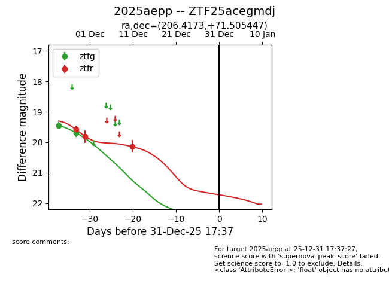
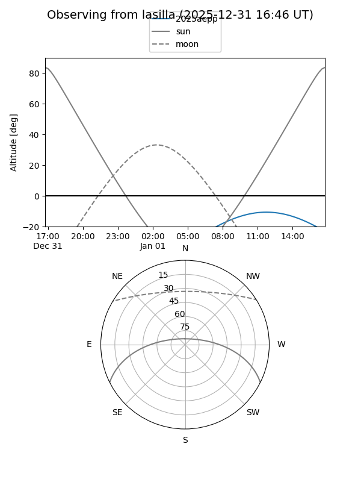
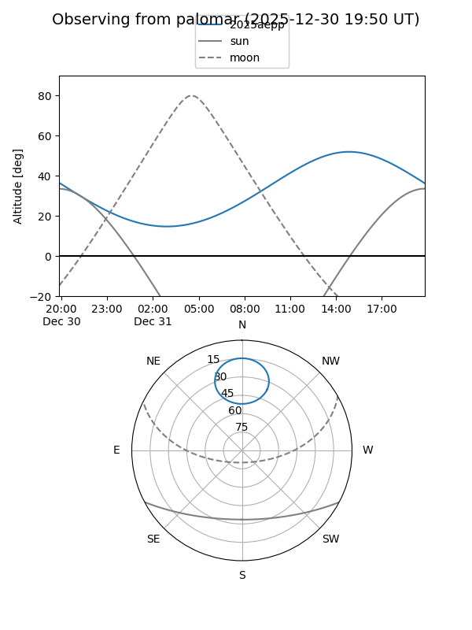
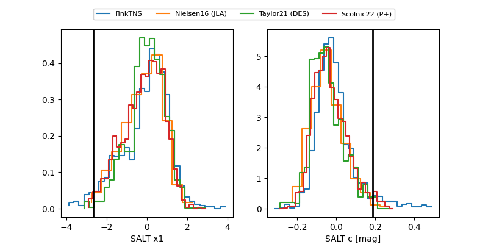

2025aepp
Target 2025aepp at 2025-12-31 17:59
Aliases and brokers:
FINK: link
Lasair: link
ALeRCE: link
TNS: link
YSE: link
alt names
ZTF25acegmdj (ztf,fink_ztf)
2025aepp (tns,yse)
Coordinates:
equatorial (ra, dec) = 206.4173,+71.50545
equatorial (HMS+DMS) = 13:45:40.16,+71:30:19.61
galactic (l, b) = (116.8971,+44.98195)
Flags:
Photometry:
last ztfg=19.68, ztfr=20.13
2 ztfg, 3 ztfr detections
Lightcurve

Visibility


Additional plots
